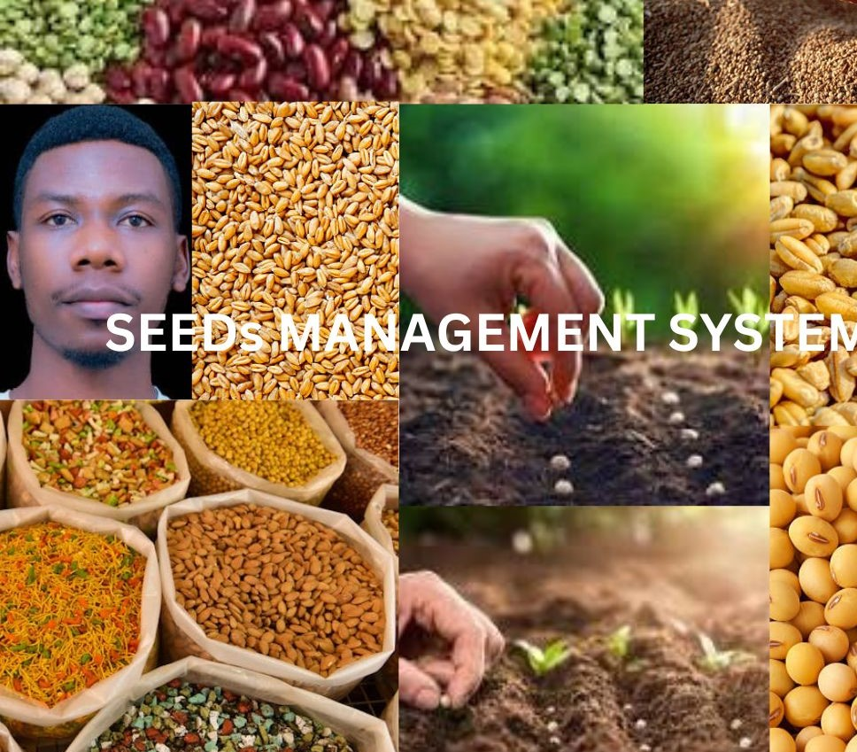

<!DOCTYPE html>
<html>
<head>
  <meta charset="utf-8">
  <meta name="viewport" content="width=device-width, initial-scale=1">
  <title> change bg color after 1 sec</title>
  <script type="text/javascript">
    const colors=['#ff0000','f1f1f1','#00ff00','#000ff','#ffff00','#ff00ff','#00ff'];
    let index =0;
    function changeBackgroundColor(){
      document.body.style.backgroundColor=colors
      [index];
      index=(index+1)%colors.length;
    }
    //change backgroundcplor every second
    setInterval(changeBackgroundColor, 1000);
  </script>
</head>
<body>

</body>
</html> <html>
<head>
  <!-- Linking to external stylesheet -->
  <link rel="stylesheet" type="text/css" href="style.css" title="style 1" media="screen, tv, projection, handheld, print"/>
  <!-- Defining character encoding -->
  <meta charset="utf-8">
  <!-- Setting viewport for responsive design -->
  <meta name="viewport" content="width=device-width, initial-scale=1">
  <title>All About System</title>
  <style>
    /* Normal link */
    a {
      padding: 10px;
      color: white;
      background-color: pink;
      text-decoration: none;
      margin-right: 15px;
    }

    /* Visited link */
    a:visited {
      color: purple;
    }
    /* Unvisited link */
    a:link {
      color: brown; /* Changed to lowercase */
    }
    /* Hover effect */
    a:hover {
      background-color: white;
    }

    /* Active link */
    a:active {
      background-color: red;
    }

    /* Extend margin left for search button */
    button.btn {
      margin-left: 15px; /* Adjust this value as needed */
      margin-top: 4px;
    }
    /* Extend margin left for search button */
    input.form-control {
      margin-left: 1200px; /* Adjust this value as needed */

      padding: 8px;
     
    }
    section{
    padding:28px;
    }
  </style>
  </head>

  <header>

<body bgcolor="yellow">
  <form class="d-flex" role="search" action="search.php">
      <input class="form-control me-2" type="search" placeholder="Search" aria-label="Search">
      <button class="btn btn-outline-success" type="submit">Search</button>
    </form>
  <ul style="list-style-type: none; padding: 0;">
    <li style="display: inline; margin-right: 10px;">
    
  </li>
    <li style="display: inline; margin-right: 10px;"><a href="./home.html">HOME</a>
  </li>
    <li style="display: inline; margin-right: 10px;"><a href="./about.html">ABOUT</a>
  </li>
    <li style="display: inline; margin-right: 10px;"><a href="./contact.html">CONTACT</a>
  </li>
    <li style="display: inline; margin-right: 10px;"><a href="./crop.php">CROP</a>
  </li>
    <li style="display: inline; margin-right: 10px;"><a href="./EMPLOYEE.html">employee</a>
  </li>
    <li style="display: inline; margin-right: 10px;"><a href="./farm.php">FARM</a>
  </li>
    <li style="display: inline; margin-right: 10px;"><a href="./seed.php">SEED</a>
  </li>
    <li style="display: inline; margin-right: 10px;"><a href="./seed_lot.php">SEED_LOT</a>
  </li>
    <li style="display: inline; margin-right: 10px;"><a href="./view_crop.php">VIEW_CROP</a>
  </li>
  
    <li class="dropdown" style="display: inline; margin-right: 10px;">
      <a href="#" style="padding: 10px; color: white; background-color: skyblue; text-decoration: none; margin-right: 15px;">Settings</a>
      <div class="dropdown-contents">
        <!-- Links inside the dropdown menu -->
        <a href="login.html">Login</a>
        <a href="register.html">Register</a>
        <a href="logout.php">Logout</a>
      </div>
    </li><br><br>
    
    
    
  </ul>

</header>
<section>

<h2 style="color: blue;"><bold><u> OUR MISSION TO SYSTEM</u></bold></h2>

<p><h3 style="color: black;">
 The mission of a seed management system typically revolves around effectively managing the lifecycle of seeds in agriculture to ensure optimal production, sustainability, and quality. Here are some key components that might contribute to the mission of a seed management system:.</h3></p>
<p><h3>Seed Management system, often referred to as inventory management system, plays a crucial role in agriculture  across various industries. A seed management system involves the strategic planning, organization, and execution of activities related to the handling, distribution, and conservation of seeds.
</h3></p><br>

<h2 style="color: blue;"><bold><u> WHAT DO WE DO</u></bold></h2>

<p><h3 style="color: black;">Designing seed management system involves several key steps to ensure its effectiveness and efficiency. Here's a general outline of what you should do:  Requirements Gathering,System Design,Technology Selection,Development and Order Management. 
</h3></p>
<p><h3>a seed management system aims to ensure the availability of high-quality seeds for agriculture, horticulture, research, and conservation purposes while promoting genetic diversity and sustainable use of plant resources.</h3></p><br>
</section>

<footer>
  <center> 
    <b><h2>UR CBE BIT &copy, 2024 &reg, Designer by: @Jean claude NDAYISENGA</h2></b>
  </center>
</footer>


</body>
</html>